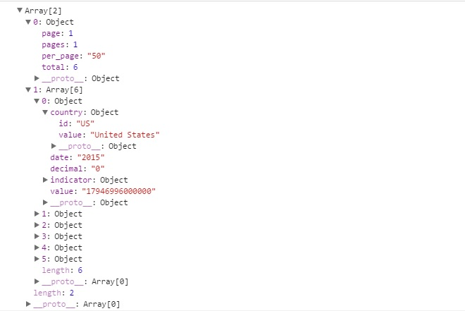
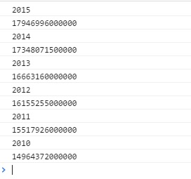

Before we can talk about the response from the World Bank API, let's talk a little bit about Ajax response formats JSON and JSONP. JSON stands for JavaScript Object Notation, its basic function is to present data in a readable format in key/value pairs. A typical JSON format will look like the following :
{ "Weather": [
{ "London":"grey",
"Seattle":"rain" .
"Hong Kong": "sunny",
"Berlin": "showers",
}],
"food": {
"Crepes": "Udon",
"Steak": "A1",
"Croissant" : "Cheese"}
}
JSONP is JSON with "Padding". How JSONP works is that it allows HTML script tags to retrieve requested data by calling a callback function, and allows the data to be wrapped around the callback function call. For example, a data consisting of JSONP contains the following:
callBackFunction({ "Weather": [
{ "London":"grey",
"Seattle":"rain" .
"Hong Kong": "sunny",
"Berlin": "showers",
}],
"food": {
"Crepes": "Udon",
"Steak": "A1",
"Croissant" : "Cheese"}
});
Now, here's a question, why use JSONP and not just plain old JSON? The reason being is the Same-Origin Policy. To simplified the matter, the SOP is a web security measurement that prevents scripts from accessing another script that are not from the same origin. So, if our browser wants to interact with the World Bank API server, the request will be denied since the browser server and the api servers are both different origin. When we run the following call with JSON as the format, the prevalent error will be returned:
XMLHttpRequest cannot load http://api.worldbank.org/countries/us/indicators/NY.GDP.MKTP.CD?format=json&date=2000%3A2015. No 'Access-Control-Allow-Origin' header is present on the requested resource. Origin 'null' is therefore not allowed access.
Thus, to circumvent this problem, we can use JSONP. Recalled that JSONP uses HTML tags to retrieve data. From the given SOP, HTML tags are not part of the contract, so we can utilize JSONP as a way to retrieve data responses.
Returning to our codes, we can now make our request with JSONP as the formatted response. We will get the following results in the console :
getResults([
{"page":1,"pages":1,"per_page":"50","total":6},
[{"indicator":{"id":"NY.GDP.MKTP.CD","value":"GDP (current US$)"},"country":{"id":"US","value":"United States"},"value":"17946996000000","decimal":"0","date":"2015"},
{"indicator":{"id":"NY.GDP.MKTP.CD","value":"GDP (current US$)"},"country":{"id":"US","value":"United States"},"value":"17348071500000","decimal":"0","date":"2014"},
{"indicator":{"id":"NY.GDP.MKTP.CD","value":"GDP (current US$)"},"country":{"id":"US","value":"United States"},"value":"16663160000000","decimal":"0","date":"2013"},
{"indicator":{"id":"NY.GDP.MKTP.CD","value":"GDP (current US$)"},"country":{"id":"US","value":"United States"},"value":"16155255000000","decimal":"0","date":"2012"},
{"indicator":{"id":"NY.GDP.MKTP.CD","value":"GDP (current US$)"},"country":{"id":"US","value":"United States"},"value":"15517926000000","decimal":"0","date":"2011"},
{"indicator":{"id":"NY.GDP.MKTP.CD","value":"GDP (current US$)"},"country":{"id":"US","value":"United States"},"value":"14964372000000","decimal":"0","date":"2010"}]
])
We can use Google Chrome Developer to open up the data that was logged:

The console returned two objects, 0:Object and 1:Array[6]. The first one carries information about pages information that we do not need to worry about. The second one contains the data that we would want. There are six items in the Array. These are the information about US GDP from year 2010-2015, with the GDP stored in value. We can use array notations to access these values.
Making slight adjustments to our callback function :
function getResults(data){
for (var i = 0; i <= 5; i++){
console.log(data[1][i].date);
console.log(data[1][i].value);
}
}
We get the following results in the console :

Success! We got our data and the right set up. Now, let's add some spice to our codes. In the next section, we will put everything together to make a form that users can submit to gather any countries GDP in a specified range.